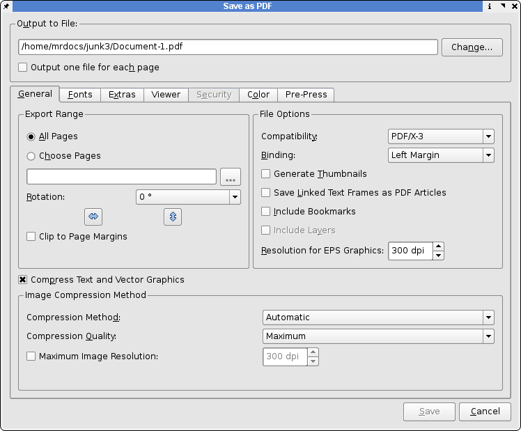
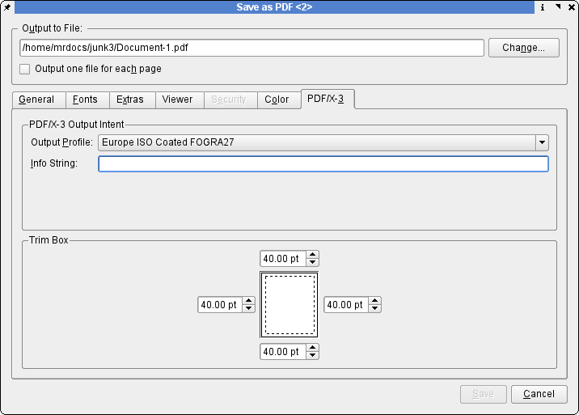

Support for PDF/X-3 was a major milestone in the development of Scribus. Scribus was the first page layout application to support a demanding, but open ISO standard: ISO 15930-3:2002. This type of support for high quality PDF creation had been exclusively the realm of expensive proprietary applications. Creating commercial press ready PDFs has historically been fraught with errors, especially for users unfamiliar with the nuances of PostScript, PDF distilling and varying capabilities of plate-setters or digital presses. The saying "It is hard to create a good PDF, but really easy to mess up", has a great deal of truth. The more common usage of the Adobe Acrobat Distiller family of applications for PDF creation has typically needed knowledge of at least some of the close to 100 Distiller parameters.
In European countries the concept of PDF/X has been more widely accepted earlier than in North America. Much of the push for these standards has come primarily from Germany and German pre-press companies, a worldwide leader in press and high end digital imaging technology.
The creation of PDF/X, currently with 3 defined ISO standards, is in part, an attempt to provide end users and creators with a vendor neutral measuring stick to vet files as suitable for professional printing or exchange with service bureaus. Scribus now has easy to understand and use options which enable end users to create 100% PDF/X-3 compliant files. By judicious use of PDF options, end users can be assured their files, if they require, to be 100% standards compliant. As always, be certain any PDFs you create can be used in the work-flow of your printer's equipment or pre-press service bureau. Not all are equipped to handle the latest in PDF technology. For example, the latest Prinergy and Harlequin image-setting work-flows are capable of supporting PDF/X-3 even with all RGB images. However, the print provider's work flow also must be able to handle this. Always consult with the commercial printer you are working with early into your production work. This almost always good advice when working with commercial printers. This avoids trouble and makes for a much less stressful situation when deadlines approach.
This panel will open first and select PDF/X-3 in the compatibility drop down box as shown below. This will change the default settings, as needed, automatically. You might notice that certain options will be greyed out. More about this below.
|  |
Next, select the Color tab, as shown below:
|
Here is where you select color profile choices to embed in the PDF. By not selecting or embedding an ICC profile for solid colors, CMYK is automatically assigned as the color space.
Next, select the Pre-Press tab, as shown below:
|  |
This is where you can adjust the PDF trim box which is a setting which defines the actual paper size in the PDF. This is a setting which defines how much space to add to the physical page for bleeds. PDF "Boxes" defined This is also where you embed in the PDF the intended press condition, which is defined by the ICC printing profile. This is probably the most important choice in terms of color profiles, as it affects color throughout the whole document. You can also put in a short note about the document, which is useful later on. This cannot be left blank - as PDF/X-3 requires it. Scribus thus disables the Save button.
Note: Because of the exacting standards of PDF/X-3, some PDF features are disabled including encryption, presentation effects and all fonts are automatically embedded. Likewise, annotations and transparency is disabled. You should carefully follow the advice given in PDF Export Options for file preparation and choice of image formats.
When you require very precise color reproduction and your printer can accept PDF/X-3 files. Without support from your printer, you are likely to have adverse color changes compared to more traditional PDF export.
Yes, the design of PDF/X-3 is intended to provide a fully color managed PDF work-flow, without detailed knowledge of actual printing technologies.
In brief, PDF/X-1a requires the following: The color space to be CMYK/greyscale, all the fonts are embedded and the settings within PDF indicate whether it is either pre-trapped = true or not-trapped = false. Think of this as a blind hand-off, as there is no certainty of how it will output.
PDF/X-2 is a looser standard - but with the requirement for more knowledge between the supplier and receiver of the file. Fonts are not required to be embedded and it is possible to use OPI (Open Press Initiative). PDF/X-2 also allows device independent color spaces, like CieL*a*b*, to be used.
PDF/X-3 allows for color profiles to be resident in the PDF, as well as different output intents and 'DeviceN' (spot color) color space - now supported in the any version of Ghostscript 8.0+. This also allows overprinting colors.
http://www.ddap.org/resource_center/article_index.php
http://www.ipa.org/PDFS/pdfxguide.zip
http://www.pdf-x.com/downloads/pdf/application_notes_pdfx3.pdf